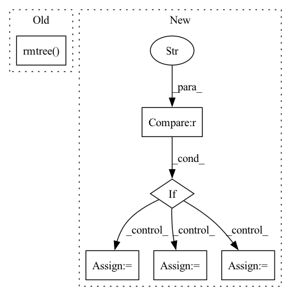

Pattern ID :9548

Before Change
os.remove(crawl_path)
os.remove(json_path)
os.remove(edge_path)
shutil.rmtree(output_path_mod)
After Change
dicom_ct,_ = nrrd.read(path_ct)
dicom_dose,_ = nrrd.read(path_dose)
assert dicom_ct.shape == dicom_dose.shape
elif modalities=="CT,PT,RTDOSE":
path_ct = output_path_mod + "/image/" + os.listdir(output_path_mod+"/image")[0]
path_dose = output_path_mod + "/dose/" + os.listdir(output_path_mod+"/dose")[0]
path_pet = output_path_mod + "/pet/" + os.listdir(output_path_mod+"/pet")[0]
dicom_ct,_ = nrrd.read(path_ct)
dicom_dose,_ = nrrd.read(path_dose)
dicom_pet,_ = nrrd.read(path_pet)
assert dicom_ct.shape == dicom_dose.shape == dicom_pet.shape
elif modalities=="CT,RTSTRUCT,RTDOSE":
path_ct = output_path_mod + "/image/" + os.listdir(output_path_mod+"/image")[0]
In pattern: SUPERPATTERN
Frequency: 3
Non-data size: 6
Instances
Fragment ID: 34184968
Project Name: bhklab/med-imagetools
Commit Name: eef51f9391d54edb5f9c1fc60bf9e7fa0991ce5b
Time: 2021-12-07
Author: vishweshramanathan@gmail.com
File Name: tests/test_autopipe.py
M Class Name: AnonimousClass
N Class Name: AnonimousClass
M Method Name: test_pipeline(2)
N Method Name: test_pipeline(2)
M Parent Class:
N Parent Class:
M File Name: tests/test_autopipe.py
N File Name: tests/test_autopipe.py
M Start Line: 26
M End Line: 84
N Start Line: 27
N End Line: 68
'>
Before Change
os.remove(crawl_path)
os.remove(json_path)
os.remove(edge_path)
shutil.rmtree(output_path_mod)
After Change
dicom_ct,_ = nrrd.read(path_ct)
dicom_dose,_ = nrrd.read(path_dose)
assert dicom_ct.shape == dicom_dose.shape
elif modalities=="CT,PT,RTDOSE":
path_ct = output_path_mod + "/image/" + os.listdir(output_path_mod+"/image")[0]
path_dose = output_path_mod + "/dose/" + os.listdir(output_path_mod+"/dose")[0]
path_pet = output_path_mod + "/pet/" + os.listdir(output_path_mod+"/pet")[0]
dicom_ct,_ = nrrd.read(path_ct)
dicom_dose,_ = nrrd.read(path_dose)
dicom_pet,_ = nrrd.read(path_pet)
assert dicom_ct.shape == dicom_dose.shape == dicom_pet.shape
elif modalities=="CT,RTSTRUCT,RTDOSE":
path_ct = output_path_mod + "/image/" + os.listdir(output_path_mod+"/image")[0]
'>
Fragment ID: 34184984
Project Name: bhklab/med-imagetools
Commit Name: c63700153e45b96c7ccfa83a492e7e3ce5df8ba2
Time: 2021-12-07
Author: vishweshramanathan@gmail.com
File Name: tests/test_autopipe.py
M Class Name: AnonimousClass
N Class Name: AnonimousClass
M Method Name: test_pipeline(2)
N Method Name: test_pipeline(2)
M Parent Class:
N Parent Class:
M File Name: tests/test_autopipe.py
N File Name: tests/test_autopipe.py
M Start Line: 26
M End Line: 84
N Start Line: 27
N End Line: 68
'>
Before Change
// check prediction
net.predict(val_dataloader, fast_dev_run=True, return_index=True, return_decoder_lengths=True)
finally:
shutil.rmtree(tmp_path, ignore_errors=True)
net.predict(val_dataloader, fast_dev_run=True, return_index=True, return_decoder_lengths=True)
After Change
gpus,
dataloader,
):
if dataloader == "with_covariates":
dataloader = dataloaders_with_covariates
elif dataloader == "fixed_window_without_covariates":
dataloader = dataloaders_fixed_window_without_covariates
elif dataloader == "multi_target":
dataloader = dataloaders_multi_target
else:
raise ValueError(f"dataloader {dataloader} unknown")
_integration(dataloader, tmp_path=tmp_path, gpus=gpus)
'>
Fragment ID: 34184890
Project Name: jdb78/pytorch-forecasting
Commit Name: 4502e81dd8dbb8ec33fbde0efcdda8c4ad701b7f
Time: 2022-03-21
Author: beitner.jan@bcg.com
File Name: tests/test_models/test_nhits.py
M Class Name: AnonimousClass
N Class Name: AnonimousClass
M Method Name: test_integration(6)
N Method Name: test_integration(3)
M Parent Class:
N Parent Class:
M File Name: tests/test_models/test_nhits.py
N File Name: tests/test_models/test_nhits.py
M Start Line: 13
M End Line: 57
N Start Line: 64
N End Line: 78